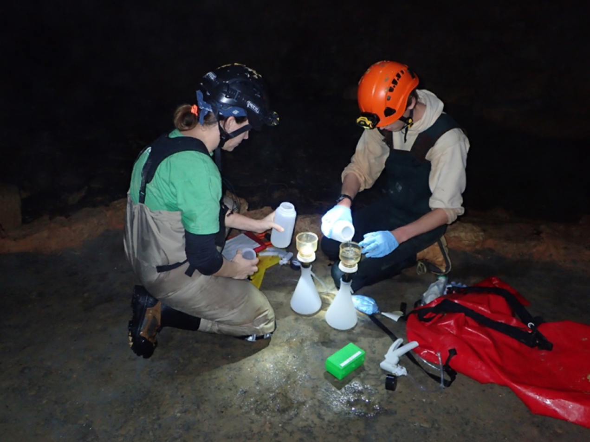
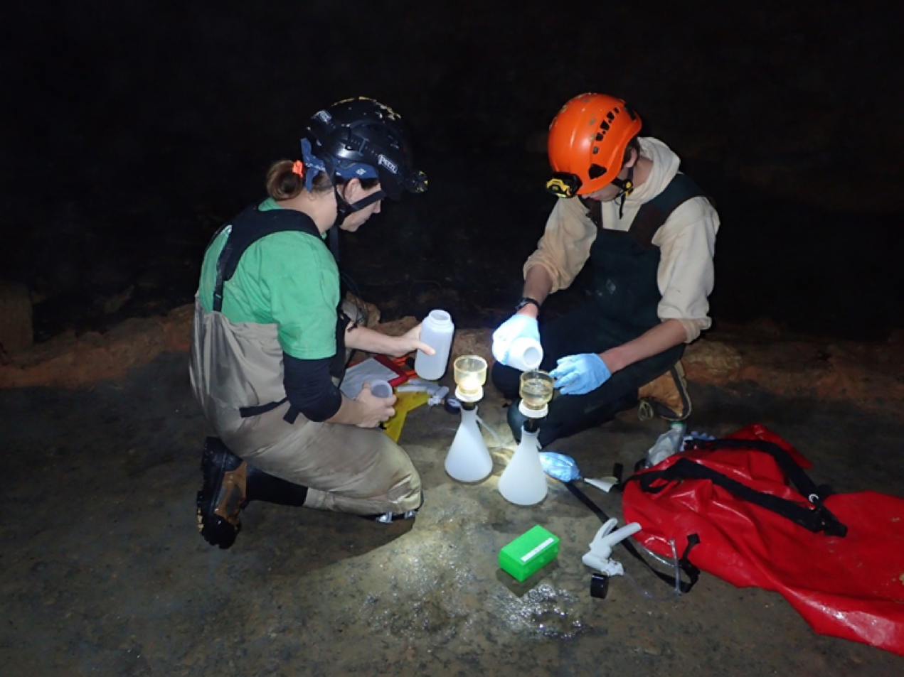

Student: Desiree Williams, M.S. Student
Pelagic broadcast spawning fish (pelagophil) is a threatened reproductive guild of fishes emblematic of the Great Plains. Dewatering, combined with other forms of fragmentation (e.g., large reservoirs), act synergistically to exacerbate the decline of pelagophils. Stream connectivity is hypothesized to be important for migrations by some pelagophils and downstream drift of eggs and larvae. It is likely that several aspects of the flow regime are important to Great Plains fishes and determining which metrics relate to overall population persistence would be beneficial to support proposed management actions. To improve our understanding of the flow needs for fishes of the Great Plains, we suggest a regional perspective relating flow loss to fish persistence would offer a negotiating point for water- management decisions. Regional flow-ecology hypotheses would support the relationships that exist across a broad range of flows and it would apply to other rivers of the region should restoration or rehabilitation become an option. Identifying flows were connectivity occurs and possible refuge locations at low flows would provide substantial support for a minimum flow needed for population persistence and identify refuge population locations under extreme conditions. Lastly, we need to understand how connectivity relates to movement by these fishes. Our specific study objectives are 1) Develop relationships between flow regime and occupancy by pelagophils, 2) Determine the relationship among habitat connectivity and flow and identify refuge habitats that persist during low-flow periods, 3) determine movement during the non-breeding season when most of our uncertainty is greatest related to movement needs. This project supports two Master’s students in the Department of Natural Resources Ecology and Management (Advisor: Shannon Brewer) and Aerospace Engineering (Advisor: Jamey Jacob).
Funding agency: U.S. Geological Survey, Science Support Partnership

Student: Joseph Dyer, Ph.D. candidate
Globally, human alterations to river systems have resulted in the decline of migratory large-river fish populations. The Red River basin is home to several migratory large-river fishes that are considered species of conservation concern. My research focuseson the movement patterns and population dynamics of Blue Suckers in the lower Red River basin (downstream of Lake Texoma). We used acoustic telemetry to document Blue Sucker movement at a coarse resolution. We found homing to the same tributaries for spawning to be common among our tagged fishes, but when fish strayed, it was common to an undammed tributary. We investigated population dynamics of Blue Suckers below Denison and Hugo dams, and modeled the trajectory of the population. Our models suggest that the populations are declining suggesting the populations near dams are sinks. To better understand the variability of Blue Sucker recruitment, we investigated the relationship between Blue Sucker abundance in each year class and the environmental flow conditions at the time each year class would have been born. Preliminary results suggest that years where adult Blue Suckers encounter natural flow pulses, rather than hydropeaking, result in strong year classes the following year. Additionally, low-flow conditions in the only undammed tributary we examined resulted in stronger year classes. I anticipate completing my dissertation in 2018.
Funding agency: Oklahoma Department of Wildlife Conservation
 
Student: Joshua Mouser, M.S. Student
Several cave species are also known to occur within the Ozark region including the federally-listed endangered Cambarus aculabrum and C. zophonastes; C. tartarus and C. subterraneus(both petitioned for federal listing); and C. hubrichti and C. setosus. There are perhaps more than 13 described and undescribed populations. However, the distribution and abundance of these cave crayfish are largely unknown: some species are thought to be very rare and endemic to only a few caves- e.g., Delaware County cave crayfish C. subterraneus, restricted to limited visual census data of about 34 individuals and known from only three caves in northeastern Oklahoma and the Oklahoma cave crayfish, C. tartarus, restricted to visual counts of less than 100 individuals and also known from only three caves. There is limited information on the spatial and temporal extent of occurrence by these species and virtually nothing is known about their ecology or life history. My research investigates new techniques for studying cave fish and cave crayfish populations in the Ozark Highlands ecoregion of Missouri, Arkansas, and Oklahoma. My two primary objectives are to assess the usefulness of using environmental DNA to determine the presence of these rare cave fauna. My second objective is to determine if the gastric mill (i.e., food grinding structure) of crayfish can be used to age crayfish. When sectioned, the gastric mill displays hypothesized annual growth marks (much like tree rings) that can be counted to determine yearly age of the organism. Results of my research will help improve our understanding of distributions and demographics of cave fish and cave crayfish.
Funding agency: U.S. Fish and Wildlife Service, Refuges


Student: Dusty Swedberg, M.S. student
Isolated populations may benefit from different conservation and management activities. The Least Darter is a species of conservation concern that has two isolated populations occupying portions of the Arbuckle Mountain and Ozark Highlands ecoregions. My study objective is to determine what environmental factors are related to Least Darter occupancy, while accounting for detection Our general approach is to assess different environmental factors at multiple spatial scales to determine the relationships among microhabitats, reaches, and stream segments and occurrence of Least Darter and sympatric species. The major benefits will be identification of likely populations that can be used as the foundation for a targeted monitoring program, and 2) it will help identify stream segments that likely contain spring locations. We will also use fiber optics to map thermal patches at a fine scale, within two stream segments, and show how Least Darter distribute themselves in response to fine-scale habitat features (i.e., temperature, depth, velocity).
Funding agency: Oklahoma Department of Wildlife Conservation

Robert Mollenhauer, Postdoctoral Research Associate
Changes in weather patterns and anthropogenic disturbance have severely altered stream ecosystems. Stream fishes are declining at an alarming rate largely due to changes to flow regimes. Thus, establishing ecological flow relationships is an important component of stream fish conservation and management strategies. Flow-ecology relationships provide a legal mechanism to balance human water-use needs with the ecological integrity of aquatic ecosystems. However, despite improved theoretical perspectives and analytical advancements, stream fish flow-ecology relationships remain poorly understood. For example, the seemingly simple question of minimum flow requirements for a stream fish species is often unknown, which inhibits effective water management plans. I am using modeled streamflow data and assemblage-level surveys from 1980-2016 to examine flow-ecology relationships of Red River stream fishes. Specifically, I am implementing a hierarchical Bayesian modeling approach to establish relationships between local colonization and extinction of stream fishes and both surface and groundwater flow metrics. In addition to providing important ecological information, the model will be used to predict future Red River stream fish distributions under different climate change and groundwater pumping scenarios. This project will help guide stream fish conservation and management strategies and water-use policies in the south-central United States.
Funding agency: U.S. Geological Survey

Student: Maeghen Wedgeworth, M.S. student
The Prairie Chub is classified as a pelagic broadcast-spawning cyprinid based on phylogenetic relationships and shared morphological characteristics with other Macrhybopsis spp. Great Plains pelagic-spawning cyprinid populations have undergone substantial population and range declines due to their sensitivity to anthropogenic changes to the natural flow regime. Currently, there is a paucity of information regarding Prairie Chub biology and life history; thus, little is known about specific factors (i.e., discharge magnitudes) that promote successful recruitment in the upper Red River basin. This research will provide a useful ecological metric for informing future water management decisions that will help conserve populations of pelagic broadcast-spawning cyprinids in the upper Red River basin. This project will be completed by a student at Oklahoma State University (PI is Shannon Brewer) and Texas A&M (co-PI is Josh Perkin). The purpose of this project is to improve the conservation and management of Prairie Chub and other pelagic broadcast minnows including members of the Macrhybopsis complex. We will assess movement at several locations to determine the relationship with recruitment. We will also evaluate the importance of flow regime metrics and relationships between hydrology and recruitment.
Funding agency: Oklahoma Department of Wildlife Conservation
Student: Andy Miller, Ph.D. candidate
Limited information is available about movements of riverine Smallmouth Bass (SMB) in landscapes with prevalent river-reservoir interfaces. This is especially problematic for the Neosho subspecies of SMB given the distribution covers an interwoven landscape of rivers and reservoirs. My dissertation research focuses on movement and habitat use of the Neosho SMB. My research focuses on the reproductive and juvenile development periods, and I am studying several aspects of age-0, juvenile, and adult SMB ecology within this framework. I am using radio telemetry to quantify movements and habitat use of adult and juvenile SMB in streams that vary in size, hydrology, and proximity to impoundments in northeast Oklahoma. I am conducting snorkel surveys on a diverse subset of stream reaches throughout the range of the Neosho SMB to understand the multi-scale habitat features and environmental conditions that influence SMB nest and age-0 SMB densities in Ozark streams. Lastly, I am quantifying days since hatch of young-of-year SMB via otoliths to determine the environmental relationships among hydrologic factors and the timing of spawning and subsequent daily growth.
Funding agency: Oklahoma Department of Wildlife Conservation
Student: Kimberly Brown, M.S. Student
Salmonids may compete for limited resources with other species with broadly similar ecological niches, but these niches may be occupied by overlooked life stages (e.g., juvenile Smallmouth Bass); nevertheless, this may affect the overall recruitment of other important sport fishes or species of conservation concern. Competitive interactions have been shown to be condition specific. For example, competitive interactions are often controlled by water temperatures and thus, may only occur seasonally or under certain environmental conditions. Understanding these differences is beneficial if there is interest in identifying conditions where stocking may be problematic for native fishes. Because competition can only be infered from field-based studies, I will conduct artificial stream experiments to determine short-term growth differences among native fishes and native fishes with trout introduced. Fish densities will be comparable to that observed in the field and fish will be maintained in a artificial riffle/pool complex where prey items will be introduced. We will create two temperature regimes in the test tanks to determine if competition is dependent on thermal conditions to gain insight into what conditions competition is more or less problematic (if either). We will use DNA:RNA ratios to measure differences in short-term growth among species. Because we know that Rainbow Trout feed heavily on crayfish, I will also compare crayfish demographics at locations occupied by trout and those that are not. This will provide additional insight to indirect interations among fish species as crayfish serve as a primary food source for important native sport fishes that prey on specific size classes of crayfish. Collectively, these data will be beneficial to agencies making decisions about stocking of non-native trout populations.
Funding agency: Arkansas Game and Fish Commission, Oklahoma Department of Wildlife Conservation

.jpg)
Student: Skylar Wolf, M.S. Student
My graduate research focuses on the ecological effects of stocking Rainbow Trout in Ozark streams. Rainbow Trout are native only to the western United States but are stocked widely throughout the country to increase fishing opportunities for anglers. The introduction of Rainbow Trout to areas outside their native range has caused concern for how they may interact and potentially compete with native fish species. Specific to my work, streams located in the Ozark Highlands are unique in that they areconsidered relatively pristine and support a diversity of native fish species that are both recreationally important and of conservation value. Additionally, the karst geology of the Ozark Highlands results in relatively high groundwater contributions to many streams, providing cool-water refuge during summer months that may sustain Rainbow Trout annually, thereby increasing the potential for negative interaction with other native fishes My research addresses two questions 1) Do Rainbow Trout displace native stream fishes from their selected habitats and 2) What is the movement potential and survival rate of Rainbow Trout across seasons in Ozark Streams? I work in streams that both contain and are absent of Rainbow Trout, using a combination of snorkel surveys, temperature mapping, habitat assessments, and fish tracking to address these questions. These data provide information useful to agencies in making future decisions about trout stocking in Ozark Highland streams.
Funding agency: Arkansas Game and Fish Commission, Oklahoma Department of Wildlife Conservation